Weapons DE
From SA-MP Wiki
Wird mit einigen Waffen-Funktionen verwendet.
Am relevantesten sind:
|
Waffe |
ID |
Slot |
Objekt-Modell-ID |
Weitere Infos |
|---|---|---|---|---|
Faust | 0 | 0 | N/A | |
Schlagring | 1 | 0 | 331 | |
Golfschläger | 2 | 1 | 333 | |
| 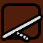 Schlagstock | 3 | 1 | 334 | |
| 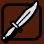 Messer | 4 | 1 | 335 | Kann Spieler entsynchronisieren, wenn deren Kehle durchgeschnitten wird (sie erscheinen dann für andere Spieler als Leichen) |
Baseballschläger | 5 | 1 | 336 | |
| 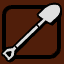 Schaufel | 6 | 1 | 337 | |
| 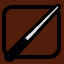 Billard-Queue | 7 | 1 | 338 | |
| 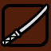 Katana | 8 | 1 | 339 | Kann Spieler nicht wie im 18+ Singpleplayer enthaupten |
| 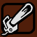 Kettensäge | 9 | 1 | 341 | |
| 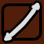 Doppelseitiger Dildo | 10 | 10 | 321 | |
Dildo | 11 | 10 | 322 | |
| 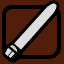 Vibrator | 12 | 10 | 323 | |
| 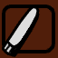 Silberner Vibrator | 13 | 10 | 324 | |
Blumenstrauß | 14 | 10 | 325 | |
Gehstock | 15 | 10 | 326 | |
| 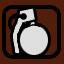 Granate | 16 | 8 | 342 | Erzeugt kein Feuer |
Tränengas | 17 | 8 | 343 | Der Husten-Effekt ist in SA:MP deaktiviert |
| 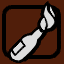 Molotov Cocktail | 18 | 8 | 344 | Produces fire |
| 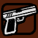 9mm Pistole | 22 | 2 | 346 | Der Skill kann mit SetPlayerSkillLevel gesetzt werden |
| 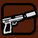 Schalldämpfer 9mm | 23 | 2 | 347 | Der Skill kann mit SetPlayerSkillLevel gesetzt werden |
| 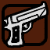 Desert Eagle | 24 | 2 | 348 | Der Skill kann mit SetPlayerSkillLevel gesetzt werden |
| 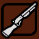 Schrotflinte | 25 | 3 | 349 | Der Skill kann mit SetPlayerSkillLevel gesetzt werden |
| 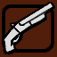 Abgesägte Schrotflinte | 26 | 3 | 350 | Der Skill kann mit SetPlayerSkillLevel gesetzt werden |
| 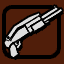 Doppelte Schrotflinte | 27 | 3 | 351 | Der Skill kann mit SetPlayerSkillLevel gesetzt werden |
| 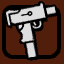 Micro SMG/Uzi | 28 | 4 | 352 | Der Skill kann mit SetPlayerSkillLevel gesetzt werden |
| 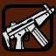 MP5 | 29 | 4 | 353 | Der Skill kann mit SetPlayerSkillLevel gesetzt werden |
| 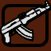 AK-47 | 30 | 5 | 355 | Der Skill kann mit SetPlayerSkillLevel gesetzt werden |
| 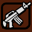 M4 | 31 | 5 | 356 | Der Skill kann mit SetPlayerSkillLevel gesetzt werden |
| 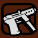 Tec-9 | 32 | 4 | 372 | Der Skill kann mit SetPlayerSkillLevel gesetzt werden |
| 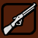 Country Gewehr | 33 | 6 | 357 | Der Skill kann mit SetPlayerSkillLevel gesetzt werden |
| 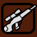 Scharfschützengewehr | 34 | 6 | 358 | Der Skill kann mit SetPlayerSkillLevel gesetzt werden |
| 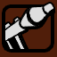 RPG | 35 | 7 | 359 | |
Wärmesuchende Rakete | 36 | 7 | 360 | Die Zielsuche ist nicht synchron |
| 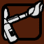 Flammenwerfer | 37 | 7 | 361 | |
| 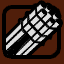 Minigun | 38 | 7 | 362 | |
| 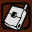 Paketbomben | 39 | 8 | 363 | Nur synchron für Spieler, die in Reichweite waren, als die Bomben angebracht wurden |
Detonator | 40 | 12 | 364 | Wird automatisch vergeben, wenn ein Spieler eine Paketbombe anbringt (vom Anti-Cheat ausschließen bzw. auf Paketbomben prüfen!) |
| 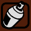 Sprühdose | 41 | 9 | 365 | Spieler, die angesprüht werden, husten |
| 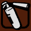 Feuerlöscher | 42 | 9 | 366 | Spieler, die angesprüht werden, husten |
Kamera | 43 | 9 | 367 | Speichert Bilder in der Galerie des Spielers, sofern das in den Einstellungen aktiviert ist (Documents\GTA San Andreas User Files\Gallery) |
| 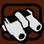 Nachtsichtgerät | 44 | 11 | 368 | Der Effekt wird für alle Spieler auf dem Server angezeigt (Fix verfügbar) |
Infrarotsichtgerät | 45 | 11 | 369 | Der Effekt wird für alle Spieler auf dem Server angezeigt (Fix verfügbar) |
| 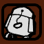 Fallschirm | 46 | 11 | 371 | Spieler sterben, wenn sie im Fallschirmflug teleportiert werden (kann mit ResetPlayerWeapons umgangen werden).
Fallschirme werden automatisch vergeben, wenn ein Spieler aus einem Flugzeug springt (vom Anti-Cheat ausschließen bzw. prüfen, ob ein Flugzeug verlassen wurde!) |
"Fake-Pistol" | 47 | N/A | N/A | ? |
Fahrzeug | 49 | N/A | N/A | Ein Todes-Symbol, kann nur in SendDeathMessage verwendet werden |
Helikopter-Rotorblätter | 50 | N/A | N/A | Ein Todes-Symbol, kann nur in SendDeathMessage verwendet werden |
Explosion | 51 | N/A | N/A | Ein Todes-Symbol, kann nur in SendDeathMessage verwendet werden |
Ertrunken | 53 | N/A | N/A | Ein Todes-Symbol, kann nur in SendDeathMessage verwendet werden |
Platsch | 54 | N/A | N/A | Ein Todes-Symbol, kann nur in SendDeathMessage verwendet werden |
Server betreten | 200 | N/A | N/A | Kann nur in SendDeathMessage verwendet werden |
Server verlassen | 201 | N/A | N/A | Kann nur in SendDeathMessage verwendet werden |
Selbstmord | 255 | N/A | N/A | Ein Todes-Symbol |

{kind=link}
{kind=link}
{kind=link}
{kind=link}
{kind=link}
{kind=link}
{kind=link}
{kind=link}
{kind=link}
{kind=link}
{kind=link}
{kind=link}
{kind=link}
{kind=link}
{kind=link}
{kind=link}
{kind=link}
{kind=link}
{kind=link}
{kind=link}
{kind=link}
{kind=link}
{kind=link}
{kind=link}
{kind=link}
{kind=link}
{kind=link}
{kind=link}
{kind=link}
{kind=link}
{kind=link}
{kind=link}
{kind=link}
{kind=link}
{kind=link}
{kind=link}
{kind=link}
{kind=link}
{kind=link}
{kind=link}
{kind=link}
{kind=link}